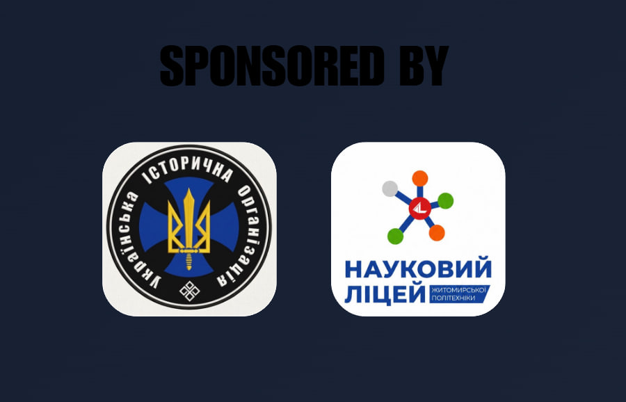

Тренувальний тест з історії України
Дано подію — обирай правильну дату
Дано дату — обирай, що тоді сталося
Питання лише з 1900–1999 років
Дано ім’я — обирай правильний факт
Дано факт — обирай, кому він належить
Розстав 4 події в правильній послідовності
Переглянути всі ачівки та прогрес
